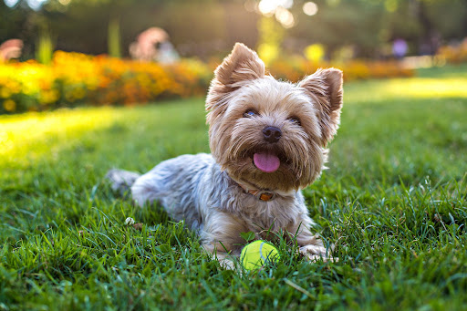

Ella es Lucy, una perrita de raza Yorkshire con un corazón enorme y una ternura que cautiva a cualquiera. Tiene apenas 1 añito de edad, pero ya ha vivido experiencias duras. La encontramos sola, deambulando por la avenida 5 de mayo mientras buscaba comida entre la basura. Su aspecto reflejaba abandono y descuido: su pelo estaba lleno de nudos y rastas, maltratado por el tiempo y la falta de cuidados. Aun así, cuando nos miró, sus ojitos mostraban dulzura y esperanza. No dudamos en recogerla y llevarla al veterinario. Allí le hicieron una revisión completa para asegurarnos de que no tenía ninguna enfermedad contagiosa o peligrosa. Por suerte, Lucy demostró ser fuerte y estar sana. Después recibió alimento, agua, un buen baño y un tratamiento especial para su pelaje, que poco a poco volvió a brillar. Lo más impresionante de Lucy es su carácter. Es juguetona, gentil y muy cariñosa. Le encanta estar acompañada, dar paseos cortos, recibir mimos, y sorprende a todos con los pequeños trucos que sabe hacer. Además, es muy educada, se adapta fácilmente a nuevas rutinas y se lleva bien con niños y otros animales. Adoptar a Lucy no solo significa darle una segunda oportunidad a una perrita que fue abandonada, sino también ganar una compañera leal, afectuosa y agradecida. Ella ya ha demostrado una gran capacidad para amar, incluso después de haber sido ignorada y rechazada. Lucy está esperando a esa familia que la mire como se merece: como un ser lleno de vida, alegría y amor por dar. Si buscas una mascota que te haga sonreír cada día y que te acompañe con fidelidad, Lucy es la elección perfecta.
